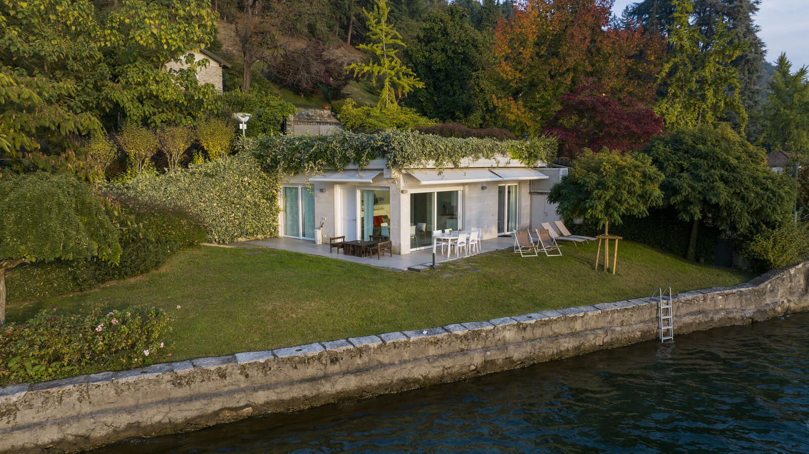

Die malerische Umgebung des Ortasees macht ihn zu einem Ort, der nicht nur ein Reiseziel ist, sondern ein Gefühl. Die Alpen und die natürliche Schönheit rund um die Villa Volpe schaffen einen Spielplatz für Erholung und Entdeckung.

Wandern
Die von der Villa Volpe aus zugänglichen Wanderwege bieten außergewöhnliche Erlebnisse, insbesondere die Route zum Sacro Monte di Orta. Der Weg durch alte Wälder, begleitet vom Gesang der Vögel, eröffnet an jeder Biegung atemberaubende Ausblicke auf den See. Wer weitere Wege sucht, findet mit dem „Anello di Ameno: Il Quadrifoglio" zusätzliche Erkundungsmöglichkeiten in den umliegenden Hügeln.

Radfahren
Mieten Sie ein Fahrrad und erkunden Sie das Seeufer in Ihrem eigenen Tempo. Gemütliche Fahrten durch die Dörfer und entlang des Wassers offenbaren versteckte malerische Ecken und charmante Piazzas. Für erfahrene Radfahrer schlängeln sich anspruchsvolle Mountainbike-Routen durch die umliegenden Berge und Wälder und bieten sowohl körperliche Herausforderung als auch spektakuläre Ausblicke.

Bootstouren
Erleben Sie den See vom Wasser aus bei einer Bootstour zur Insel San Giulio. Die Nähe der Villa Volpe zum Wasser macht es leicht, Bootsausflüge zu organisieren, die Abenteuer mit Ruhe verbinden. Der öffentliche Fährdienst verkehrt regelmäßig, oder Sie können private Bootstouren für ein intimeres Erlebnis arrangieren.
Schwimmen
Im Sommer laden die kristallklaren Gewässer des Sees zu einem erfrischenden Bad ein. Die Villa Volpe bietet direkten Seezugang vom privaten Garten aus, sodass Sie jederzeit ins Wasser springen können, wenn Ihnen danach ist. Die Außendusche mit warmem und kaltem Wasser eignet sich perfekt zum Abspülen danach.
Die Villa Volpe bietet die perfekte Basis für Outdoor-Abenteuer – ein komfortables Refugium, in dem die Gäste entspannen, neue Kraft schöpfen und die Erlebnisse des Tages Revue passieren lassen können, bevor sie zum nächsten Abenteuer aufbrechen.